Scienze e salute
17 schede in italiano sul tema «Scienze e salute», pronte da stampare e con soluzioni.
17 materiali
Classe
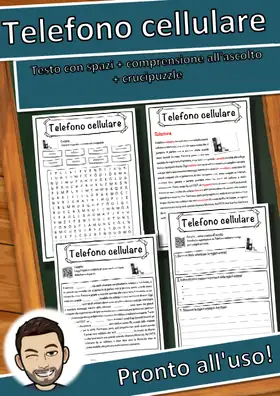
Telefono cellulare – Scheda: testo con spazi vuoti, comprensione all'ascolto e crucipuzzle
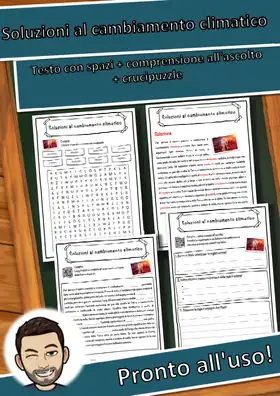
Soluzioni al cambiamento climatico – Scheda: testo con spazi vuoti, comprensione all'ascolto e crucipuzzle

Salute – Scheda: testo con spazi vuoti, comprensione all'ascolto e crucipuzzle
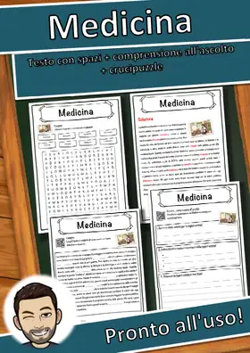
Medicina – Scheda: testo con spazi vuoti, comprensione all'ascolto e crucipuzzle
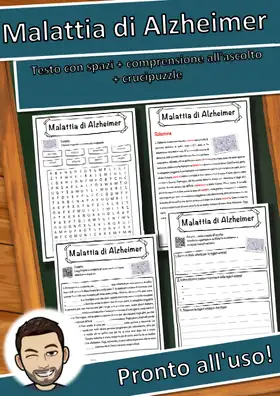
Malattia di Alzheimer – Scheda: testo con spazi vuoti, comprensione all'ascolto e crucipuzzle
Energia nucleare – Scheda: testo con spazi vuoti, comprensione all'ascolto e crucipuzzle
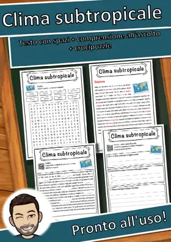
Clima subtropicale – Scheda: testo con spazi vuoti, comprensione all'ascolto e crucipuzzle
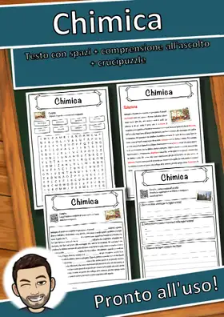
Chimica – Scheda: testo con spazi vuoti, comprensione all'ascolto e crucipuzzle

Cambiamento climatico – Scheda: testo con spazi vuoti, comprensione all'ascolto e crucipuzzle
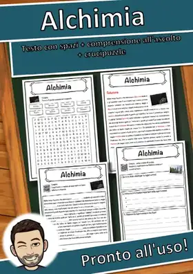
Alchimia – Scheda: testo con spazi vuoti, comprensione all'ascolto e crucipuzzle
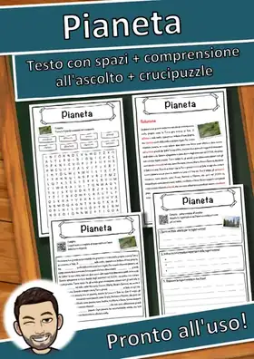
Pianeta – Scheda: testo con spazi vuoti, comprensione all'ascolto e crucipuzzle
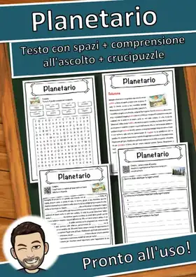
Planetario – Scheda: testo con spazi vuoti, comprensione all'ascolto e crucipuzzle
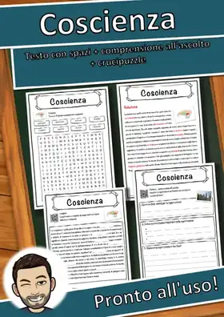
Coscienza – Scheda: testo con spazi vuoti, comprensione all'ascolto e crucipuzzle
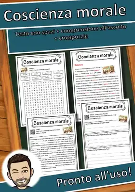
Coscienza morale – Scheda: testo con spazi vuoti, comprensione all'ascolto e crucipuzzle
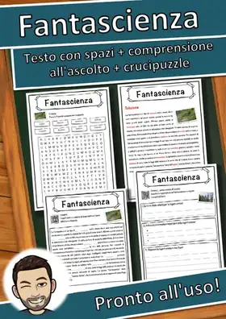
Fantascienza – Scheda: testo con spazi vuoti, comprensione all'ascolto e crucipuzzle
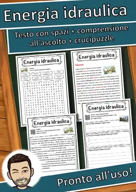
Energia idraulica – Scheda: testo con spazi vuoti, comprensione all'ascolto e crucipuzzle
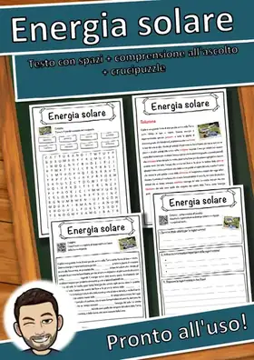
Energia solare – Scheda: testo con spazi vuoti, comprensione all'ascolto e crucipuzzle
Nessun materiale trovato: prova con un'altra parola o un altro filtro.